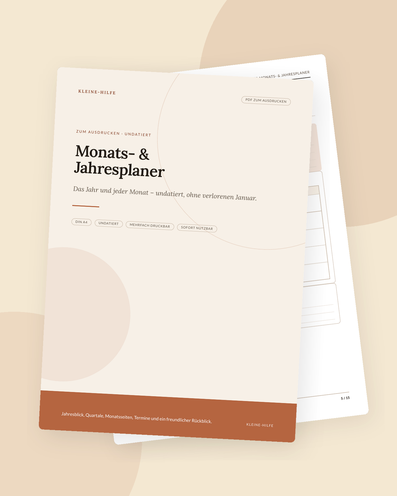

Start · Ratgeber · Neujahrsvorsätze durchhalten
Alltag & Vorsätze
Neujahrsvorsätze durchhalten
Der 1. Januar ist ein möglicher Anfang, kein Zauberdatum. Vorsätze halten eher, wenn sie klein, sichtbar und an ein Leben gebunden sind, das schon läuft – nicht an eine Idealversion deiner selbst.

Jedes Jahr entstehen in den ersten Januarwochen lange Listen: mehr Bewegung, weniger Bildschirm, ein aufgeräumtes Konto, ein neues Lernziel, bessere Abende. Viele davon sind verständlich und gut gemeint. Schwierig wird es, wenn der Vorsatz ein Lebensgefühl beschreibt, aber keinen nächsten sichtbaren Schritt. Dann bleibt er ein Satz – und Sätze allein verändern den Dienstagabend selten.
Dieser Text verspricht keine Erfolgsquote und zitiert keine angeblichen Prozentsätze gescheiterter Vorsätze. Solche Zahlen kursieren oft ohne klare Grundlage. Nützlicher ist ein handfestes Vorgehen, das du in jeder Woche des Jahres nutzen kannst.
Warum Vorsätze so oft verblassen
Drei typische Muster tauchen immer wieder auf. Erstens bleibt der Vorsatz vage („gesünder leben“). Zweitens kommen zu viele Vorhaben gleichzeitig, sodass sie um dieselbe knappe Abendenergie konkurrieren. Drittens ist der Plan an eine außergewöhnliche Startwoche gebunden: viel Zeit, viel Motivation, leerer Kalender. Spätestens wenn der normale Alltag zurückkehrt, fehlt dem Vorsatz ein Ort.
Hinzu kommt oft eine stille Alles-oder-nichts-Logik. Wer drei Tage aussetzt, erklärt den Januar für verloren und verschiebt den Neuanfang auf nächsten Montag, den 1. des übernächsten Monats oder gleich aufs Folgejahr. Dabei wäre der nächste sinnvolle Schritt meist klein und sofort möglich.
Weniger Vorhaben, klarer gefasst
Wähle ein bis drei Vorsätze für denselben Zeitraum, nicht zehn. Formuliere sie so, dass du erkennen kannst, ob sie diese Woche stattgefunden haben. Aus „ich will besser mit Geld umgehen“ wird „ich schließe sonntags in zwanzig Minuten meinen Monatsblick ab“ oder „ich lege bei jeder Gehaltszahlung einen festen Betrag in den Notgroschen“. Aus „mehr Ruhe“ wird „drei Abende in dieser Woche ohne Handy ab 21 Uhr“.
Prüfe jeden Satz auf die Frage: Was genau tue ich, wann, und woran merke ich, dass es geschehen ist? Was sich nicht beobachten lässt, lässt sich auch schwer durchhalten. Ein Sparvorhaben kannst du im Sparziel- und Notgroschenplaner konkret machen; Bewegung oder Wohlbefinden im Alltag im Fitness- und Wohlfühl-Tracker. Beides sind Raster, keine Beratung und keine Erfolgsgarantie.
Vom Jahressatz zur Woche
Ein Jahr ist zu groß, um es auf einmal zu steuern. Übersetze jeden Vorsatz in eine Wochengröße. Nicht „ich laufe dieses Jahr regelmäßig“, sondern „in dieser Woche stehen zwei kurze Einheiten im Kalender“. Nicht „ich räume die Wohnung“, sondern „am Mittwoch die eine Fläche, die mich jeden Morgen reizt“.
Der undatierte Wochenplaner und der Gewohnheitstracker sind dafür gedacht: die Woche sichtbar machen, den kleinen Schritt ankreuzen, weitergehen. Die Techniken aus dem Ratgeber Gewohnheiten aufbauen greifen hier direkt – Wenn-Dann-Pläne, Anker an bestehende Abläufe, eine Umgebung, die den Schritt erleichtert.
Starten, auch mitten im Jahr
Der Jahresanfang hat den Reiz eines leeren Blatts. Praktisch darfst du in jeder beliebigen Woche beginnen. Undatierte Vorlagen nehmen genau den Druck aus dem Datum. Wer im März oder nach den Sommerferien anfängt, hat keinen Nachteil gegenüber dem 1. Januar – außer dem Gefühl, etwas verpasst zu haben. Dieses Gefühl kannst du streichen.
Ein Monats- und Jahresplaner hilft, den groben Bogen zu sehen, ohne jeden Tag im Voraus festzulegen: wichtige Monate, ruhigere Phasen, ein oder zwei Vorhaben, die in diesem Quartal zählen. Der Rest des Lebens darf auf dem Blatt Platz behalten.
In ruhigen Abständen prüfen
Setze dir eine kurze, wiederkehrende Überprüfung – zum Beispiel am letzten Sonntag im Monat. Drei Fragen reichen: Was hat stattgefunden? Was war zu groß oder schlecht verankert? Was lasse ich bewusst los, damit das Wichtige weiterlaufen kann? Diese Überprüfung ist keine Zeugniskonferenz. Sie ist Wartung.
Schreibe Änderungen auf. Ein Vorsatz, der sich im Januar richtig anfühlte und im März nicht mehr in dein Leben passt, darf umformuliert oder beendet werden. Durchhalten heißt nicht, an einem Satz festzuhalten, der seine Aufgabe nicht mehr erfüllt.
Wenn etwas nicht hält
Ein gerissener Faden ist häufig kein Charakterurteil, sondern ein Hinweis auf Zuschnitt, Umgebung oder schlicht auf eine volle Phase. Kürze den Schritt, verlege den Anker, nimm ein Vorhaben ganz heraus. Fang am nächsten passenden Tag wieder an, ohne eine Strafauflage für den Vortag.
Vorsätze dürfen dem Leben dienen, das du schon führst. Sie müssen es nicht ersetzen. Wenn du merkst, dass hinter einem Vorsatz vor allem Erschöpfung, Druck oder die Erwartung anderer steht, ist eine Pause oder ein Gespräch mit einer Vertrauensperson oft nützlicher als ein neuer Tracker. Die Blätter von Kleine-Hilfe bleiben dabei Werkzeuge: Papier, das den nächsten Schritt sichtbar macht – nicht mehr.
Passende Planer zum Ausdrucken
Die Artikel bleiben auch ohne Kauf nützlich. Wenn du die Schritte gerne auf Papier festhältst, findest du hier ruhige Vorlagen dazu.


Weitere Ratgeber
- ADHS im Alltag organisierenDrei Prioritäten, ein Gedankenparkplatz und Routinen, die tragen, statt zu erziehen.
- Haushaltsbuch führen: eine AnleitungFixkosten zuerst, den Monat in Euro planen und in kurzer Zeit abschließen – ohne schlechtes Gewissen.
- Umschlagmethode erklärtCash Stuffing und Budget-Umschläge: Töpfe befüllen, Ausgaben notieren, Reste übertragen.
- Mental Load reduzierenUnsichtbare Aufgaben sammeln, sortieren und teilen – ohne große Debatte am Anfang.
- Meal Prep für AnfängerZuerst planen und Vorräte prüfen, dann kochen. Ein Restetag gehört dazu.
- Gewohnheiten aufbauenWenn-Dann-Pläne, Gewohnheiten an Bestehendes hängen und Fortschritt sichtbar machen – ohne Punktekonto.
- Lernplan für PrüfungenVom Termin rückwärts planen, Stoff portionieren, aktiv üben und Puffer offen lassen.